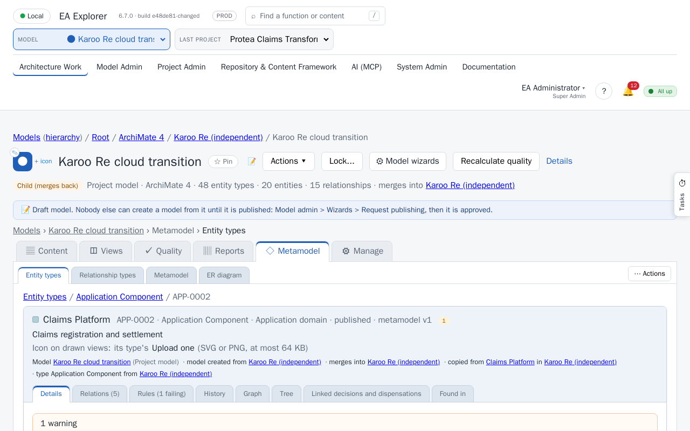

Delete an entity
For: Practising architects
Remove an entity from the model; its relationships go with it, and it stays in history.

#/search?q=Claims%20PlatformWhy do this
When something no longer exists, or was recorded by mistake, deleting it keeps the model true. It stays in history, so the deletion can be undone, and it is your uncommitted change until committed. For something retired but worth remembering, a lifecycle status is often better than deletion.
Content work is the everyday heart of architecture: recording what exists and what should, and how it all connects. EA Explorer checks it against the metamodel as you go and keeps it as your change until it is reviewed.
In TOGAF terms: Phases B, C and D: recording the building blocks and relationships of the baseline and target architectures. See EA Explorer and the TOGAF Standard.
The goal: An entity that should not be there is removed, with its relationships.
Before you start You need a role on the model that may change content (Architect or higher).
Steps
- Open the entity (or right-click it).
- Delete; read what goes with it; confirm.
- Commit the change.
If something goes wrong
Undo it: the entity's history, Roll back to the version before.